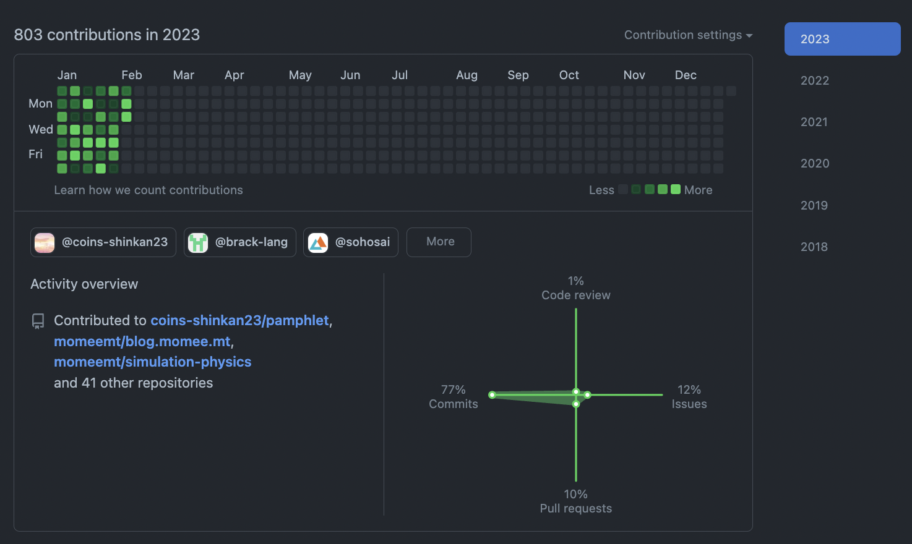

今週の日報
何してた？あまりよく覚えていない。なんかぼんやりと辛いな〜と思うことが多かった。
やったこと
- シミュレーション物理レポート week3
- 2月のプレイリスト作った
- シミュレーション物理の授業に出た
- nix-shellの勉強をした
- SATySFiのNixビルドをした
- PR出した
- 局ミに出た
- ジョットク 最終レポート提出
- デートした
- シンボリックリンク貼り替えを作った
- 部屋を片付けた + カーペットを敷いた
- focupを作り始めた
- 新歓パンフレットを完成させた
- ネミに出た
- SOSのコードリーディング + QRバックエンド実装
なんか色々やってはいるみたいです
GitHub
160contributionsくらい
年始はコードを書くことを強めに意識しててやっと130〜140だった気がするけど今週は特に頑張ろうという意識もなくただ時間あるときはずっとコード書いていたのでそういうところはえらいなって思います（照）
反省
なんかずっとぼんやりしていたのでシャキッとできるといいですね
ぼんやりしていると将来への不安みたいなのが強まるので[1]、よくないです[2]
ようやくパンフが落ち着いてSOS読めるようになってきたんですけどRust楽しくて良いですね。あとすごいプログラマが書いたプログラムを読むのはたのしい。
余裕あったらNimコンパイラとかHPKEとかやりたいんだけど来週は期末なのであまりそういった余裕もないかもしれないですね
目標のふりかえり
- 追加修正が飛んできたので承認をもらえたかと言われると微妙
- あーでもQRは書き始めました、えらいです
- タスクも急いで割り当てたけど文章を全く作っておらず実態は放り投げただけであり、よくない
- なんか憂鬱になってぼんやりしてたら2時だった日とかあって全然ダメでしたねこれ
- 向精神薬なんですね YouTubeって 多分YouTubeを禁止するより精神がダメにならない方法を探す方が先で、それは早寝早起きで、もっと言えばストレス溜めないためにスケジュール管理が先で、それはメンタル終わってると無理なので、こういうことなんですね あーあ 死にたいです
- これは諸事情あってブロッキング要素があるので仕方ない
- これも仕方ない案件
- 今回はいやに計画的です えらい
- ちょっと設定したけどほぼ使えてない
- ちょっとずつ戻ってきてる
- これは春休みのどこかでやる気あったらでいいや
- 来週に引き継ぎ これはやるべきだった
来週の目標
- SOSのコードリーディングを進める
- OOPの期末対策を早めに終わらせる
- ゼロから学ぶRustを読み終える
- YouTubeを見ない
- がんばりたい
- 辛くなったら散歩でもしてみようかな
- 22:30までに就寝する
- これを毎日やってた去年の春頃の自分には頭が上がらない
- jsys - タスクを適切に分割する + 開発方針を書く
- 金フレ 1〜140
- Habitifyの設定をする
- Sortedでスケジュール管理を再開する
- 朝起きたらやることを確認する
- できるだけ毎日タイムラプスを撮ってみる
- コンネト第2章を読み終わる
脚注
- 太宰に心酔した大学生みたいになって困る
- 本当に